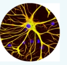

Silvère Gangloff

Silvère Gangloff
2018-2019. Post-doctoral researcher at LIP, ENS Lyon,
working with
Nathalie Aubrun and
Michael Rao in the ANR project CoCoGro.
2015-2018. Ph.D. in Mathematics and Theoretical computer
science: Algorithmic complexity
of growth-type invariants of multidimensional SFT under
dynamical constraints, under supervision of
Mathieu Sablik.
2011-2015. ENS Paris: Studies in mathematics,
biology, and history ; Master of mathematics;
Agrégation de mathématiques.
More details:
Curiculum vitae.
Mail: first.last@gmx.com
A description of my main research project can be found
there. It is related to computational threshold phenomena in classes of lattice models in quantum
and statistical physics. In this weblog, I will in a more informal way some ideas that I leave informal, hoping
to develop them later.

On the book L'Homme glial, Y. Agid and P. Magistretti: their text presents advances during the last decade
in understanding the role of glial cells in the brain, and in particular astrocytes, revealing that these cells
are not only auxiliary cells for neurons, providing energy and evacuating lethal excesses of neurotransmitters,
but are also fundamental for information processing in the brain. Amongst the functions in which astrocytes are imvolved
are for instance the control of neurogenesis, the acceleration or inhibition of neurotransmission, and synchronization amongst
groups of neurons. Moreover, they are opposed to neurons in their information transmission mode, thus providing elements for
the reflexion on trade-off between wire and diffusive modes in the brain. Since they are involved in computing, one could wonder
about the computational power of these cells; this could be put in relation with recent evidence that a simple cell,
called Amoebe, can solve some NP-hard problem in linear time [ref].
Free thoughts:
1. A comparison of computation embedding constructions of subshifts of finite type and the model of hierarchical predictive coding
[ref:Canonical microcircuits for predictive coding] in terms
of information processing structures.
2. I spend a lot of time to read on various subjects: biology,
philosophy, psychology, etc.
I also like to write and I attempt to build a coherent
framework based on my notes on many observations and readings.
In a nutshell, I am interested in the comparative understanding
of different approaches to knowledge: mathematics,
alchemy, religion.. amongst many other things.